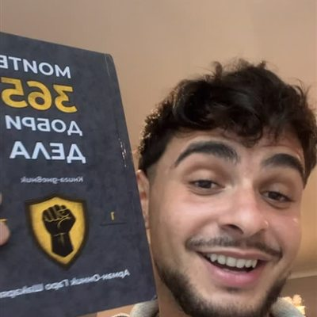

Натисни точка 👆
Историите
Всяка държава – една история, един урок и едно добро дело, което можеш да направиш и ти.
Арман-Онник Гаро Шакарян, авторът на книгата-дневник, е пътешественик. Книгата е пътувала с него от Америка до Азия и Африка – а навсякъде той е търсил доброто в хората.

„Бъдете добри хора, правете добро. Обещавам ви, ще ви се върне, че и в пъти повече!“
— Арман, в Instagram на книгатаВсяка държава – една история, един урок и едно добро дело, което можеш да направиш и ти.